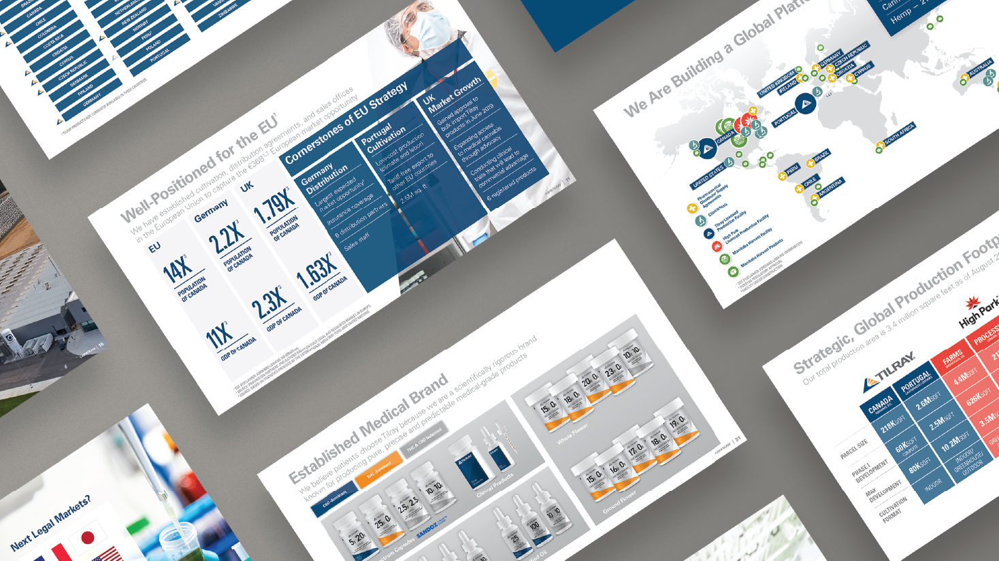

Tilray
Tilray is a medical cannabis company headquartered in Canada with facilities and offices around the world.
Investor Presentations
I designed layouts for many presentations at Tilray. Some for the board of directors meetings where I worked closely with CXOs to compile and design slides. Most others were Investor presentations leading up to Tilray’s IPO.
Using Medical Cannabis
A publication by Tilray focusing on real world utilization, cases and practical experience with medical cannabis. I worked on eight issues over three years. My reponsibilities included layout design, communicating with agency reponsible for content, making updates as necessary, and providing print-ready and digital files.
Logo Animations
A few logos I animated in after effects based on storyboards a teammate created.